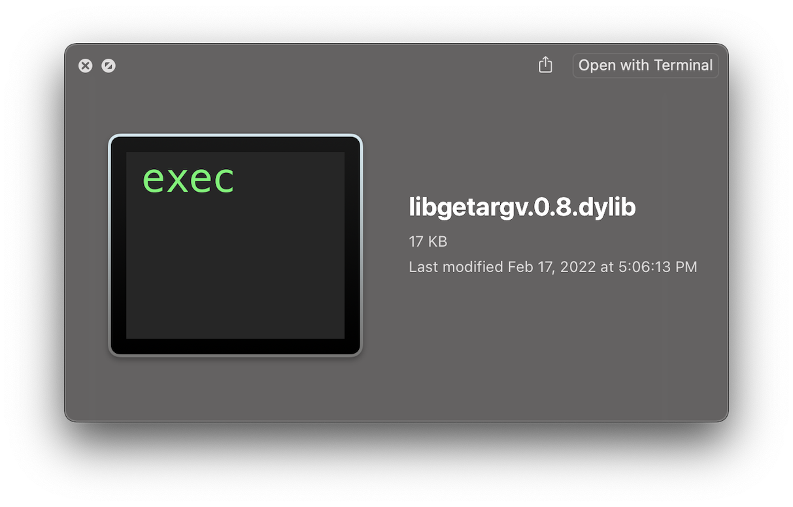

<div id="main" class="wrapper style1">
  <div class="container">
    <header class="major">
      <h2>Library</h2>
      <p>Use my algorithm to correctly handle process args</p>
    </header>

    <!-- Content -->
    <section id="content">
      <a class="image fit"></a>
      <h3>Fast, and correct algorithm</h3>
      <p><code>libgetargv</code> uses the same code as <code>getargv</code>, so it is just as <a href="/fast.html">fast</a> and <a href="/resilient.html">resilient</a> as the standalone tool.</p>
      <h3>dSYM symbols</h3>
      <p>I provide a <code>dSYM</code> bundle to symbolicate the library when debugging your program.</p>
      <h3>Manpage</h3>
      <p>I provide a <a href="/man3.html">manpage</a> that documents the library functions.</p>
    </section>
    <section>
      <iframe src="/man3.html" width="80%" height="200px"></iframe>
    </section>
  </div>
</div>
